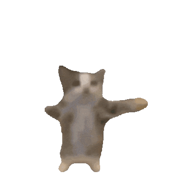

I can do all things through Christ who strengthens me.
Five of My Favorite Things
- Favorite animal: Platypus
- Favorite food: Fried Rice
- Favorite movie: Ready Player One
- Favorite hobby: Watching Anime
- Favorite anime:
- Black Clover
- One Piece
- Danganronpa
A picture that represents when I'm happy
You can view the image for the "Happy Happy Happy" kalimba tutorial from the Cat Meme Song popularized on TikTok at Kalimba Class via this link: Happy Happy Happy - Clases de Kalimba.
A picture that represents when I'm sad

This picture of the banana cat can be found at Devian art